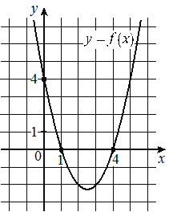

Opus100
Предварительные разборы, внешнего эталона нет.
На рисунке изображён график функции вида Найдите значение

{
"complete": true,
"included": true,
"exclusion_reasons": [],
"author_mode": "standalone_initial",
"author_path": "data\\annotation\\runs\\2026-11-07-fipi-team-bogdan108-051-150\\raw\\author\\ABA2A7.json",
"auditor_path": "data\\annotation\\runs\\2026-11-07-fipi-team-bogdan108-051-150\\raw\\auditor\\ABA2A7.json",
"feedback_ref": null,
"source_run": "data/annotation/runs/2026-11-07-fipi-team-bogdan108-051-150"
}{
"task_id": "ABA2A7",
"solution_status": "solved",
"answer": "18",
"steps": [
{
"id": "s1",
"action": "Считать с графика нули функции и точку пересечения с осью Oy",
"result": "f(1)=0, f(4)=0, f(0)=4",
"kc_ids": [
"kc1"
],
"input_refs": [
"condition"
]
},
{
"id": "s2",
"action": "Записать квадратичную функцию в разложенном виде через нули и найти старший коэффициент по известной точке",
"result": "f(x)=a(x-1)(x-4), 4a=4, a=1, f(x)=(x-1)(x-4)",
"kc_ids": [
"kc2"
],
"input_refs": [
"s1"
]
},
{
"id": "s3",
"action": "Вычислить значение функции в заданной точке",
"result": "f(-2)=(-3)(-6)=18",
"kc_ids": [
"kc3"
],
"input_refs": [
"s2",
"condition"
]
}
],
"kc_candidates": [
{
"id": "kc1",
"name": "Считать координаты характерных точек с графика",
"description": "По графику функции на клетчатой сетке определить точки пересечения с осями и другие точки с целыми координатами; применимо, когда точки отмечены или явно лежат в узлах сетки."
},
{
"id": "kc2",
"name": "Восстановить квадратичную функцию по нулям и дополнительной точке",
"description": "По двум нулям квадратичной функции записать её как a(x-x1)(x-x2) и найти a из координат ещё одной точки графика; применимо при известных действительных нулях."
},
{
"id": "kc3",
"name": "Вычислить значение функции, заданной формулой",
"description": "Подставить значение аргумента в формулу функции и выполнить арифметические действия."
}
],
"methods": [
{
"id": "m1",
"name": "Восстановление формулы квадратичной функции по графику и подстановка",
"step_ids": [
"s1",
"s2",
"s3"
]
}
],
"warnings": []
}{
"task_id": "ABA2A7",
"catalog_version": "fipi50-editorial-v1-frozen",
"decisions": [
{
"local_kc_id": "kc1",
"status": "match",
"catalog_kc_id": "graph_coordinates",
"evidence": [
{
"ref": "step:s1:action",
"quote": "Считать с графика нули функции и точку пересечения с осью Oy"
},
{
"ref": "step:s1:result",
"quote": "f(1)=0, f(4)=0, f(0)=4"
},
{
"ref": "image:assets/34ad389edbe2ccf480e5d3c6.png",
"region_description": "Парабола на клетчатой сетке; на оси Ox отмечены точки с подписями 1 и 4, на оси Oy отмечена точка с подписью 4 — пересечения графика с осями отмечены жирными точками"
}
],
"context_refs": [
"condition",
"image:assets/34ad389edbe2ccf480e5d3c6.png"
],
"alternatives_checked": [
{
"catalog_kc_id": "literal_9aee0783618d",
"reason": "касается знака производной по графику, а не координат точек"
}
],
"rationale": "Операция — считывание координат отмеченных пересечений графика с осями по масштабу сетки; точки отмечены и подписаны. Восстановление формулы выполнено отдельно в s2, что соответствует границе определения.",
"proposal": null,
"blocking": false,
"issue_ids": []
},
{
"local_kc_id": "kc2",
"status": "match",
"catalog_kc_id": "literal_6241f0b09502",
"evidence": [
{
"ref": "step:s2:action",
"quote": "Записать квадратичную функцию в разложенном виде через нули и найти старший коэффициент по известной точке"
},
{
"ref": "step:s2:result",
"quote": "f(x)=a(x-1)(x-4), 4a=4, a=1, f(x)=(x-1)(x-4)"
}
],
"context_refs": [
"step:s1:result"
],
"alternatives_checked": [
{
"catalog_kc_id": "literal_f253b50b98a1",
"reason": "линейная функция по двум точкам, не квадратичная"
},
{
"catalog_kc_id": "linear_equation",
"reason": "решение 4a=4 — тривиальный компонент внутри восстановления, не самостоятельное действие кандидата"
}
],
"rationale": "Нули 1 и 4 и дополнительная точка (0;4) вне нулей из s1; запись a(x-r1)(x-r2) и нахождение a=1 полностью соответствуют определению узла.",
"proposal": null,
"blocking": false,
"issue_ids": []
},
{
"local_kc_id": "kc3",
"status": "match",
"catalog_kc_id": "literal_6308771d01a6",
"evidence": [
{
"ref": "step:s3:action",
"quote": "Вычислить значение функции в заданной точке"
},
{
"ref": "step:s3:result",
"quote": "f(-2)=(-3)(-6)=18"
}
],
"context_refs": [
"step:s2:result",
"condition"
],
"alternatives_checked": [
{
"catalog_kc_id": "physical_formula_substitution",
"reason": "относится к прикладной формуле с единицами величин, здесь — математическая функция"
}
],
"rationale": "Подстановка аргумента -2 в установленную в s2 формулу и вычисление (-3)(-6)=18; область определения — вся прямая. Арифметика проверена.",
"proposal": null,
"blocking": false,
"issue_ids": []
}
],
"issues": [],
"review_scope": "KC mapping with incidental mathematical checks; not expert validation"
}[]
{
"included": true,
"exclusion_reasons": [],
"source_policy_included": true,
"source_policy_exclusion_reasons": []
}